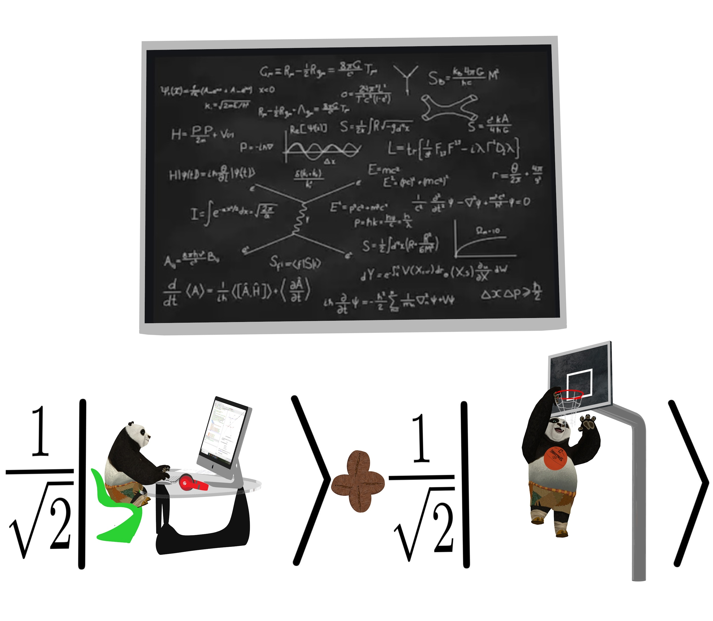

MATH 1800: Quantum Information Theory with Applications to Cryptography Spring 2022
Instructor: Boris Tsvelikhovskiy bdt18 AT pitt.edu
Classes
The course meets MWF 11 - 11 50 am.
Overview
This is a one-semester introductory course in Quantum Information Theory. The main goal is to give the students an idea of the mathematics behind quantum algorithms
and why in certain cases they are much more effective compared to their classical counterparts. After a brief introduction to Quantum Mechanics (mainly the principle of superposition),
the basics of quantum computation and Discrete Fourier Transform, we will introduce one of the main quantum algorithms due to P. Shor. We will show how modifications of this algorithm
can be applied to the two most important cryptosystems: RSA and ECC. We will also discuss possible effects that the emergence of a quantum computer would have on the standards of modern
cryptography.
Texts
- Kitaev, A., Shen, A., and Vyalyi, M., Classical and quantum computation, Graduate Studies in Mathematics,
American Mathematical Society, Providence, RI, 2002, ISBN 0-8218-2161-X.
- R. de Wolf: Quantum Computing Lecture Notes
Syllabus
Please find the syllabus here.
Schedule
- January 10-14: Boolean functions, maps and Boolean circuits computing them. Chapters 2.1 and 7.1 (book)
- January 19-21: Qubits, Dirac's notation, tensor products. Chapters 6.1, 6.2 (book)
- January 24-28: Hermitian inner product, unitary operators, quantum circuits. Chapters 6.3, 8.1, 8.2 (book)
- January 31-February 4: Norm and approximate realizations of unitary operators (notes).
- February 7-11: Deutsch-Jozsa, Bernstein-Varizani and Simon's algorithms. Chapters 2.4.1-2.4.2 and 3.1 (notes)
- February 14-18: Simon's algorithm, entanglement of states, EPR pairs, no-cloning theorem, teleportation of qubits (see the notes).
- February 21-25: Finite groups, Midterm 1 review and exam.
- February 28-March 4: (Extended) Euclid's algorithm, introduction to cryptography, RSA (see the notes).
- March 14-18: Discrete Fourier transform, Shor's algorithm. Chapter 5 (notes).
- March 21-25: Hidden subgroup and discrete logarithm problems, elliptic curves (notes).
- March 28-April 1: Elliptic curve cryptography, midterm review, midterm exam.
- April 4-8: Elliptic curve cryptography, Shor's algorithm for (elliptic curve) discrete logarithm problem (see the notes).
Elliptic curves over Fp, adding points (graphically)
- April 11-15: Grover's algorithm and applications (SAT problems), see handwritten notes and Chapter 7 of de Wolf's notes.
- April 18-22: Quantum key distribution (see handwritten notes and Chapter 16.1 of de Wolf's notes), bitcoin (see handwritten notes), final review.
Video lectures on bitcoin, etc. (highly recommended!)
Play around with hash function SHA256
Lecture notes
Homeworks and bonus problems
Exams